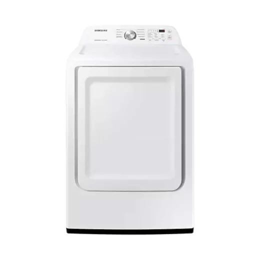
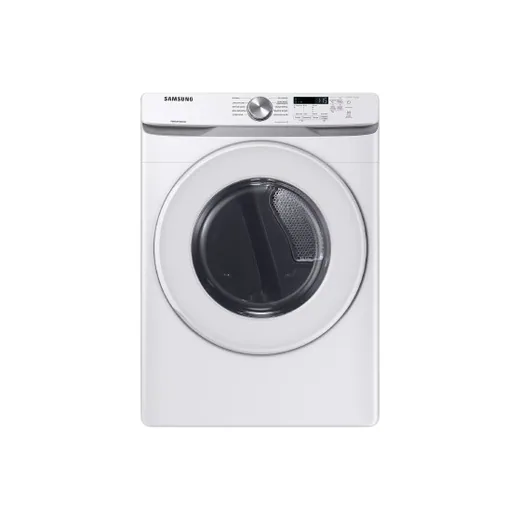
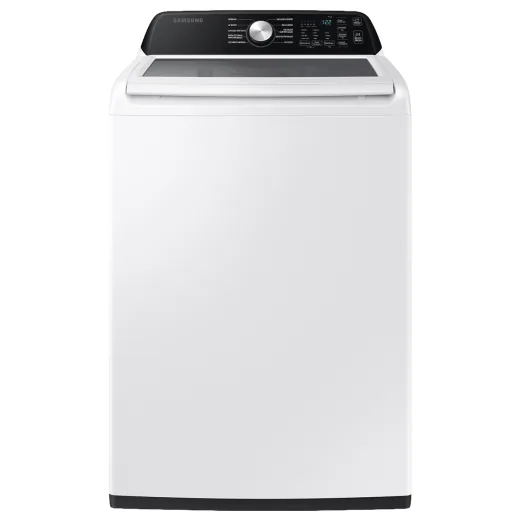
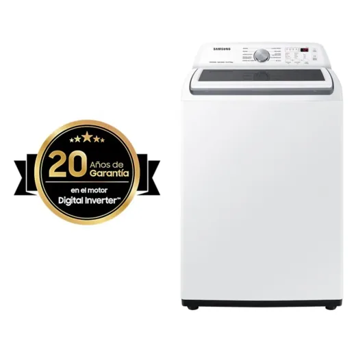
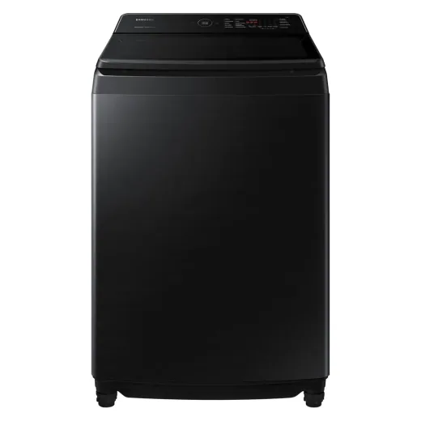

Inicio › Lavadoras y secadoras

Samsung · Modelo WA25DG5505AWAX
Lavadora Samsung · 25 kg · WA25DG5505AWAX
L 13,990
Más barato en Diunsa · ahorras hasta L 1,509 frente a la tienda más cara
Precio en cada tienda
| Tienda | Precio | Antes | Disponibilidad | |
|---|---|---|---|---|
| Diunsa | L 13,990 | Disponible | Ver en tienda › | |
| Lady Lee | L 15,499 | Disponible | Ver en tienda › |
Precios referenciales tomados de cada tienda el 28 de noviembre de 2026. El precio válido es el que muestra la tienda al comprar.
Historial de precio
Lo seguimos desde el 1 de noviembre. Precio más bajo registrado: L 13,990 en Diunsa (1 de noviembre), igual que hoy. Cambios de precio registrados: 1.
Características
| Capacidad | 25 kg |
|---|
Descripción
Lavadora Samsung 25 kg Digital Inverter – Potencia, Inteligencia y Cuidado para tu Ropa
La Lavadora Samsung WA25DG5505AWAX combina alta capacidad, tecnología avanzada y comodidad inteligente para transformar tu rutina de lavado. Con una capacidad de 25 kg, es perfecta para familias grandes o quienes buscan lavar grandes cargas en menos tiempo.
Su motor Digital Inverter (DIT) garantiza eficiencia energética, menor ruido y mayor durabilidad. Además, cuenta con funciones como Super Speed, Active Water Jet, Deep Fill y Self Clean, que optimizan cada ciclo para cuidar tus prendas y ahorrar tiempo.
La tina Swirl+ y el sistema VRT Plus reducen vibraciones, mientras que su pantalla LED, Smart Control y conectividad con SmartThings te permiten controlar y monitorear tu lavadora desde tu smartphone. Su diseño en color blanco con tapa de
Otros lavadoras y secadoras Samsung

Secadora Samsung · 22 kg · Eléctrica · DVE22A3200WL 14,490En 4 tiendas · más barato en Diunsa Lavadora Samsung · 26 kg · WA26DG5500AWL 15,990En 2 tiendas · más barato en Diunsa
Lavadora Samsung · 26 kg · WA26DG5500AWL 15,990En 2 tiendas · más barato en Diunsa
Secadora Samsung · 20 kg · Carga frontal · DVE20T6000WL 15,990En 2 tiendas · más barato en Diunsa
Lavadora Samsung · 23 kg · WA70H23SPWEDL 15,995.01En Gallo más Gallo Lavadora Samsung · 21 kg · WA40H21UAWEDL 11,799En 3 tiendas · más barato en Elektra
Lavadora Samsung · 21 kg · WA40H21UAWEDL 11,799En 3 tiendas · más barato en Elektra Lavadora Samsung · 17 kg · Carga superior · WA17CG6441BWL 11,795En Walmart
Lavadora Samsung · 17 kg · Carga superior · WA17CG6441BWL 11,795En Walmart
Lavadora Samsung · 23 kg · WA23C3553GWL 11,690En 3 tiendas · más barato en Diunsa
Lavadora Samsung · 21 kg · Carga superior · WA21CG6746BWL 11,595En Walmart